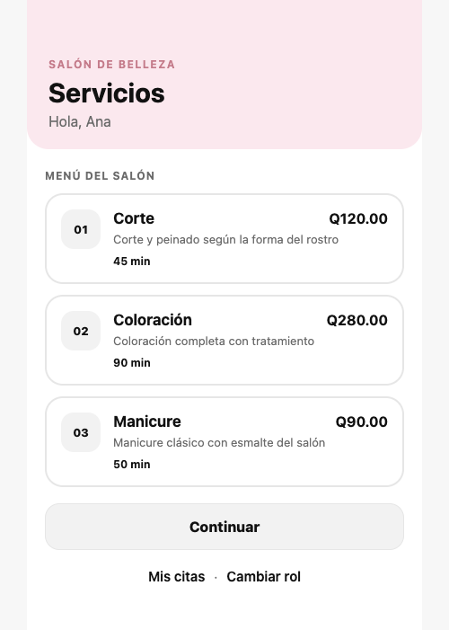
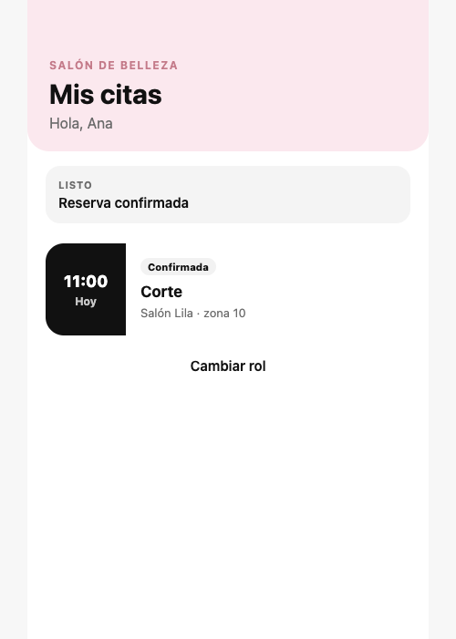
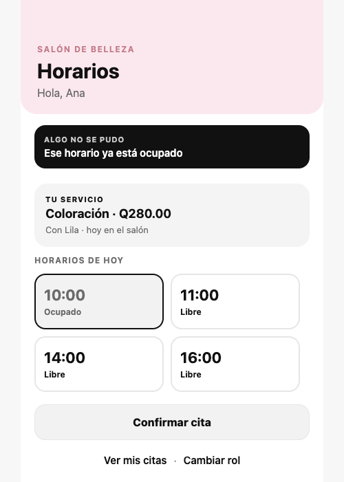
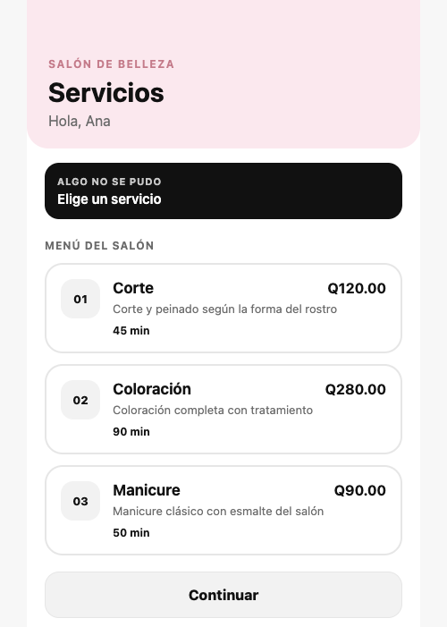
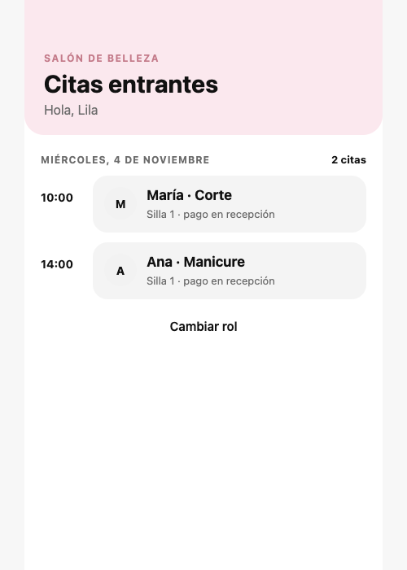

Pasó · 01-catalogo.yaml · 6s
Catálogo de servicios
Ana entra como clienta y ve el menú del salón.
Dado que abro la app como clienta Entonces veo el servicio "Corte" Y veo el servicio "Coloración" Y veo el servicio "Manicure"

Artefacto 1
Pasó · 01-catalogo.yaml · 6s
Ana entra como clienta y ve el menú del salón.
Dado que abro la app como clienta Entonces veo el servicio "Corte" Y veo el servicio "Coloración" Y veo el servicio "Manicure"

Pasó · 02-reserva-exitosa.yaml · 16s
Ana elige corte a las 11:00. La pantalla final muestra la confirmación y la cita.
Cuando elijo el servicio "Corte" Y elijo el horario "11:00" Y confirmo la cita Entonces veo la confirmación de la reserva Y en mis citas veo Corte a las 11:00

Pasó · 03-horario-ocupado.yaml · 14s
El reset deja las 10:00 tomadas por María. Ana no puede confirmar coloración en ese hueco.
Cuando elijo Coloración y el horario 10:00 Y confirmo la cita Entonces veo "Ese horario ya está ocupado" Y no veo la confirmación

Pasó · 04-validacion.yaml · 7s
Continuar sin elegir deja a Ana en el catálogo y muestra el error.
Cuando continúo sin elegir un servicio Entonces veo el error "Elige un servicio" Y sigo en el catálogo de servicios

Pasó · 05-agenda-profesional.yaml · 17s
Ana reserva manicure a las 14:00. Lila abre su calendario y ve esa cita junto a la de María a las 10:00.
Cuando Ana reserva Manicure a las 14:00 Y cambio al rol de profesional Entonces Lila ve a Ana, Manicure, 14:00
